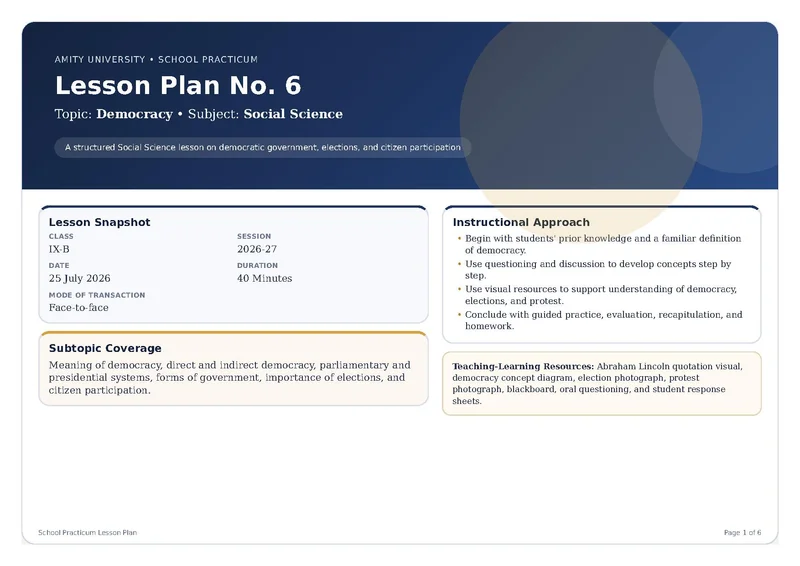

Teaching Democracy: More Than a Definition
Structured inquiry lesson plan exploring democratic participation through primary source extracts, tiered comparison questions, and visual dialogue.
Teaching Resources
Curated lesson designs, classroom frameworks, and teaching materials from on-ground practice.
A structured classroom design planning for a single shared learning intention through differentiated comprehension routes: primary source evidence, structured dialogue, and visual interpretation.
Teacher’s Resource Library
1 file in the library

Structured inquiry lesson plan exploring democratic participation through primary source extracts, tiered comparison questions, and visual dialogue.
Additional classroom lesson plans, formative assessment rubrics, and source-analysis worksheets from the ongoing 16-week school internship at Panchsheel Balak Inter-College have not yet been published, and will appear here as teaching modules are completed and anonymised.